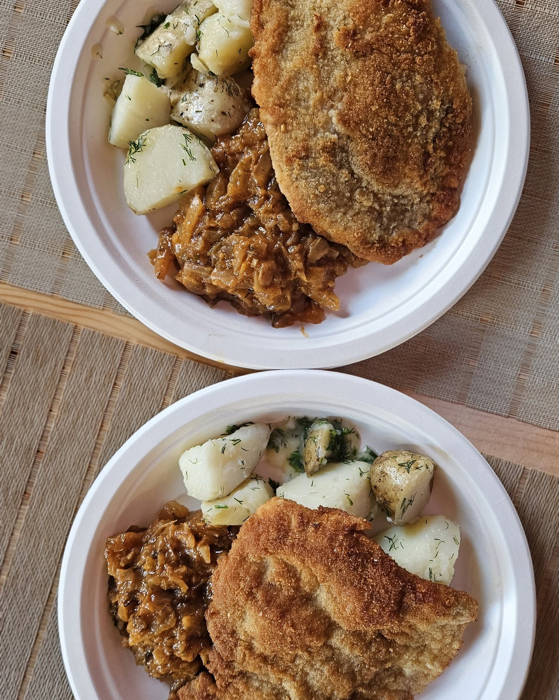

Kulisy kuchni: jak powstają nasze najpopularniejsze dania

Za każdym talerzem stoi plan, tempo pracy i dbałość o świeże składniki.
W Ręczna Robota 2.0 Wodnik dzień zaczynamy od przygotowania stacji i krótkiej odprawy zespołu. Dzięki temu kuchnia działa płynnie nawet w godzinach największego ruchu.
Jak planujemy dzień
- Weryfikujemy świeże dostawy i dostępność kluczowych produktów.
- Ustalamy pozycje dnia, które warto dodatkowo polecać gościom.
- Rozdzielamy zadania tak, aby utrzymać stałą jakość i czas serwisu.
Dlaczego sezonowość ma znaczenie
Korzystanie z sezonowych produktów pozwala nam utrzymać świeżość i naturalny smak potraw. To również sposób na bardziej zrównoważoną kuchnię i większą elastyczność menu.